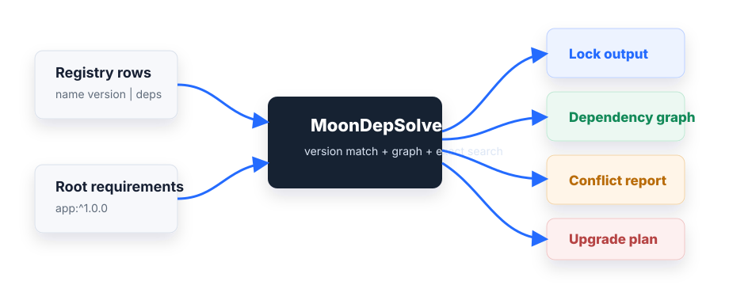

Stable decisions
Version candidates are ordered deterministically, so the same registry and roots produce the same result.
MoonBit package ecosystem tooling
MoonDepSolve provides semantic-version parsing, deterministic dependency resolution, stable lock output, dependency graphs, conflict reports, and exact upgrade planning for MoonBit tools.
$ moon check --deny-warn
Finished. moon: ran 5 tasks
$ moon test --deny-warn
Total tests: 27, passed: 27
$ moon publish
Server status: 200 OK
Why it exists
Version candidates are ordered deterministically, so the same registry and roots produce the same result.
Conflict reports keep the package name, requirement, selected version, dependency path, and candidates visible.
The library keeps solving, lock output, graphs, and upgrade planning separate from any one package manager UI.
Capabilities
Parse registry rows, match version requirements, select compatible package versions, and write stable lock output for downstream tools.
CLI demo
moon run cmd/cli --target native -- \
resolve \
--registry examples/registry.txt \
--root 'app:^1.0.0' \
--format lockmoon run cmd/cli --target native -- \
plan \
--registry examples/registry.txt \
--lock examples/current.lock \
--root 'app:^1.0.0' \
--strategy minimalstrategy: minimal-change
changes: 0
target lock:
# MoonDepSolve lock
app 1.0.0
core 1.0.0
logging 1.0.0Evidence
API surface
parse_version, format_version, compare_version
resolve, parse_registry, format_lock, parse_lock
build_dependency_graph, build_conflict_report
default_upgrade_options, plan_upgrade, format_upgrade_plan
Exact signatures are tracked in pkg.generated.mbti.
OSC2026 delivery